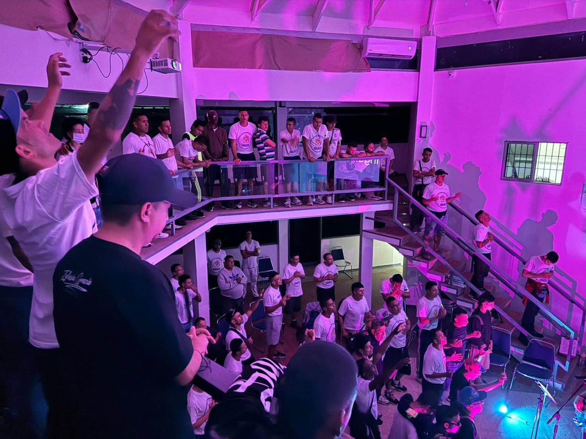
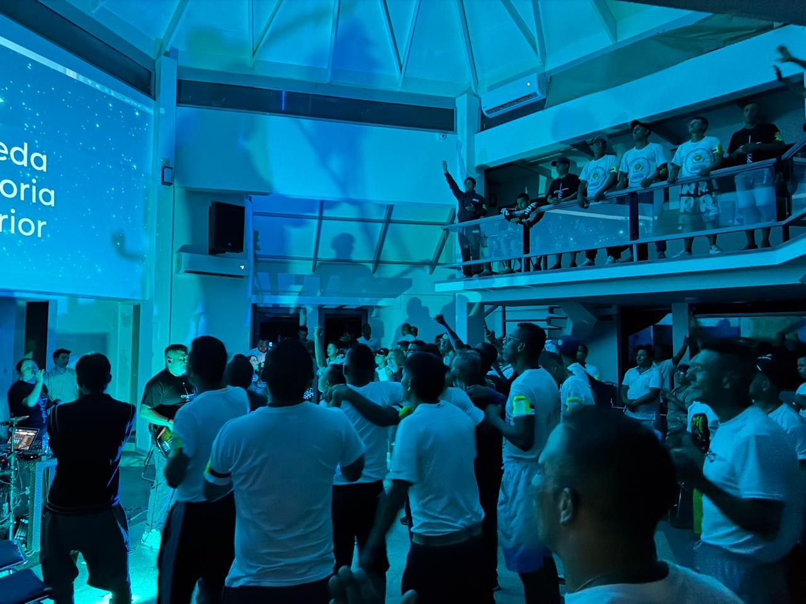

Quiero visitarlos
Descubre cómo llegar, conoce nuestra ubicación y prepárate para vivir una experiencia diferente donde podrás encontrarte con Jesús y ser parte de nuestra familia.
Cómo llegarUn lugar donde encuentras salvación a través de Jesucristo, restauración para tu familia y libertad para tu alma.
Descubre cómo llegar, conoce nuestra ubicación y prepárate para vivir una experiencia diferente donde podrás encontrarte con Jesús y ser parte de nuestra familia.
Cómo llegarConsulta los días y horarios de nuestras reuniones, instituto bíblico y actividades especiales para que puedas organizar tu visita.
Ver horariosSi es tu primera vez o estás buscando un nuevo comienzo, aquí encontrarás todo lo que necesitas saber para dar tu primer paso con confianza.
Comenzar aquíIglesia Gracia es una comunidad cristiana fundamentada en la Biblia, centrada en Jesucristo y guiada por el Espíritu Santo. Creemos que la transformación verdadera comienza en el corazón y se refleja en la familia y la sociedad.
Somos una iglesia de sana doctrina, comprometida con enseñar el mensaje de Jesucristo de manera fiel, íntegra y bíblica. Creemos en una fe sólida que transforma vidas, forma discípulos y guía a cada persona a vivir conforme al propósito de Dios.


Un lugar diferenteUn equipo comprometido con la restauración integral de las personas y las familias.
Licenciado en Teología y Ciencias Religiosas, terapeuta en adicciones e Ingeniero Multimedia. Se ha dedicado a guiar vidas hacia la restauración y el propósito en Dios. A través de su labor en la iglesia y en la Fundación La Luz IPS, acompaña procesos de transformación integral, combinando principios bíblicos con herramientas terapéuticas.
Psicóloga con énfasis en familia, comprometida con la restauración emocional y espiritual de los hogares. A través de su labor en el área ambulatoria de la Fundación La Luz IPS y su liderazgo en los ministerios de mujeres y niños, acompaña procesos de formación, sanidad y crecimiento integral.
Iglesia Gracia Internacional cuenta con el respaldo y la cobertura espiritual del Pastor Marco Millones, director de la Universidad de Mahanayim de Teología, quien ha sido guía y mentor en la formación de nuestros pastores. Esa preparación nos ha equipado con fundamentos sólidos en la Palabra de Dios y principios ministeriales que fortalecen nuestra visión.
Conocer la Universidad MahanaimHistorias reales de vidas transformadas por el poder de Dios.
Te esperamos con los brazos abiertos. Ven y sé parte de lo que Dios está haciendo.
Los diezmos y ofrendas sostienen la obra, desarrollan programas y ministerios, y llevan el mensaje de Jesús a más personas. Cada semilla que siembras, Dios la multiplica.